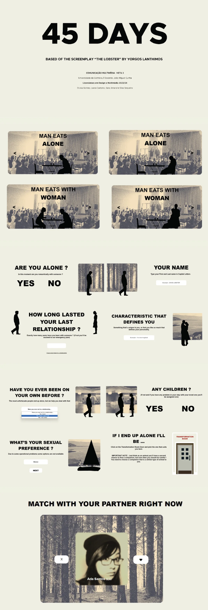
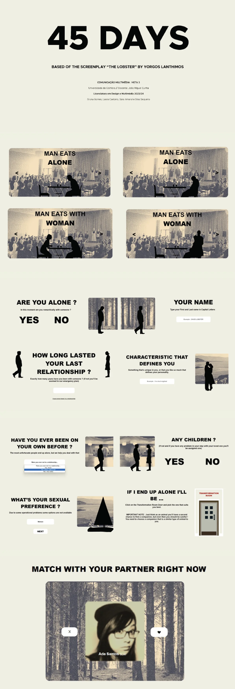

Take a Look at my Work !
Our multimedia object is a dating website based on the film “The Lobster” directed by Yorgos Lanthimos, which portrays a dystopia where people are forced to get married, have a partner, or be turned into animals. In this goal, we implemented the website where the user must register, fill out a form with personal questions and then they can choose and match the suggested people. They can then book a room and choose activities with their match or choose another person and have access to their profile.
Read more
Link to the website 

This project was created as part of the Project 1 - Web Identity subject, during our second year in the Bachelor's Degree program in Design and Multimedia at the Faculty of Sciences and Technology of the University of Coimbra, unde the guidance of professors Artur Rebelo, Eduardo Mota and Tiago Martins. Ciclo de Conversas Design e Multimédia is a series of talks organized yearly b teachers of the Bachelor and Master programs in Design and Multimedia of the University of Coimbra. Each year, students are grouped and tasked with creating a proposal for the visual identity of the event, and one of the proposals is chosen by the organizing committee to be used in the following years CCDM. When developing the visual identity, we took in consideration how CCDM was an event made by designers, for designers, which for us meant that we could push boundaries, making an experimental, abstract and dynamic identity. We decided we wanted to explore the idea of letters as abstract and distorted shapes, and since the visual identity would be heavily digital, we focused on randomized and generative design. Our final result was a bright and randomized visual identity. We defined eight different two-tone color palettes and designed a logo that could be randomly distorted. With the help of JavaScript and P5JS, we were able to develop a website with shapes that morphed randomly and continuously, using perlin noise to limit and control the distortion. The website was also made to be interactive, since every click changed the color palette, and the user could influence the speed of the morphing. The project's main focus was to create a web identity, however, during every phase of the project we always considered whether our ideas could be executed without programming or not. Therefore, every random aspect of our identity can be replicable manually, from simply choosing one of the many color palettes or by distorting the logo using a series of set rules.
Read more
Link to the website"The Toaster" is a short film that tells the story of a compulsive smoker looking for his moment of rest and pleasure at the end of a work day. The protagonist of this story encounters a problem when he tries to light his cigarette: his lighter doesn't work. This obstacle forces him, desperately, to search for other alternatives to light his cigarette. Software used: Adobe Premiere Pro, Adobe After Effects.
Read more

"A Joke" is a card game with the goal of promoting dialogue and using a story as a tool to understand each player's perspectives and opinions on various subjects. This game has two decks: one with narrative cards that contain a part of the text and a question related to that excerpt, and one with utility cards that allow players to change the course of the game or answer more questions. The narrative cards must be ordered from 1 to 21 and the utility cards can be in random order; both decks must be face down. The first player is chosen randomly, draws a narrative card, reads the text and asks the respective question to another player of their choice. That player draws a utility card before answering and does what is on the card (if it is another question the player has to answer both); the player who answered is the next to read. The utility cards have several functions that influence the game. For example, the "wind" card allows the player initially chosen to answer to choose another player to answer in their turn; the "slide" card makes the player have a time limit of 10s to answer. These cards are repeated throughout the deck, except for the "I love you, Nadia" card which is unique and has the question "Do you think love is a joke?". The game is based on the previously delivered editorial object. The game consists of answering yes or no questions related to Anton Chekhov's short story "A Joke," mostly about love. This game visually features the two characters from the story, descending the hill in a snowy and mountainous environment. The player clicks left or right on the computer keys, and when they are on the side referring to their answer, they click on the computer space bar and proceed to the next question. At the end, after answering all the questions, the player receives an answer about their choices. Software used: Adobe Illustrator, Adobe Photoshop, Processing.
Read more

This project is a Single Page Web Application called Art Rush. It features a React-based front-end powered by Vite and a Node.js/Express backend with MongoDB for the database. The application allows users to browse, save & rate historic european artworks. The application encrypts passwords in such a way that even the developers cannot access the utility passwords. The application is highly flexible and suitable for computers, phones, tablets, as well as its desktop version.Another interactive feature is that the background color of the web page changes to match the background color of the user's browser. If the browser background is white, the page will display a white background. Similarly, if the browser background is black, the page will also have a black background.
Read more